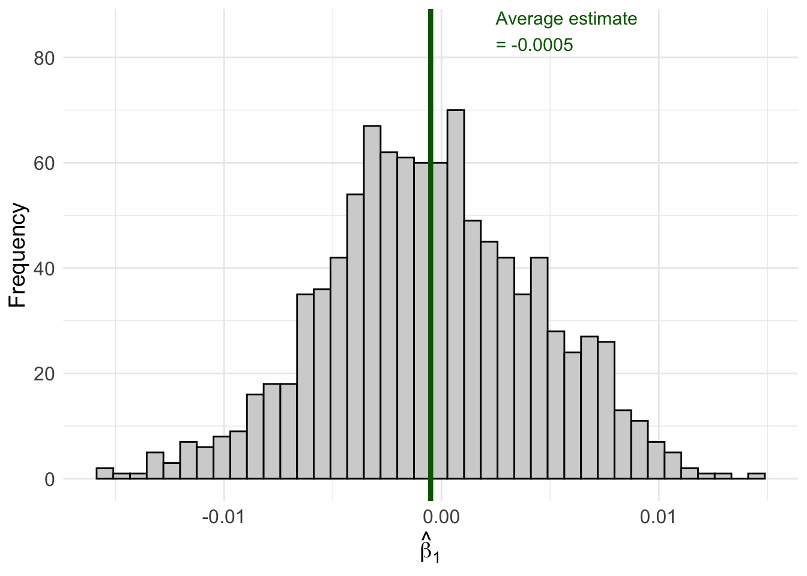
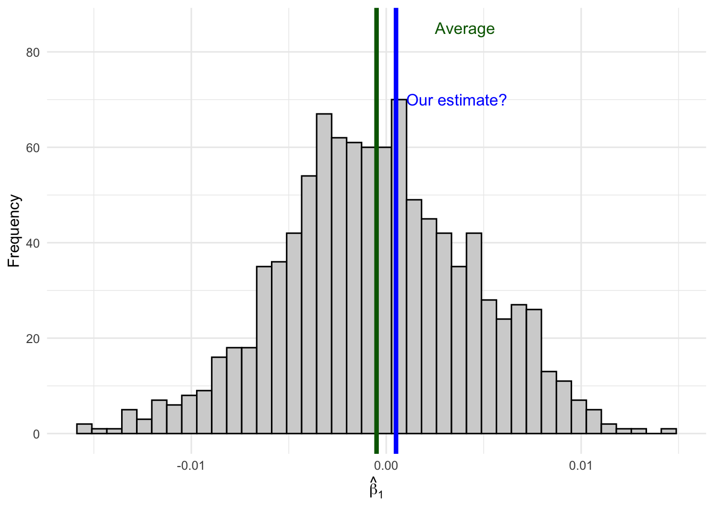
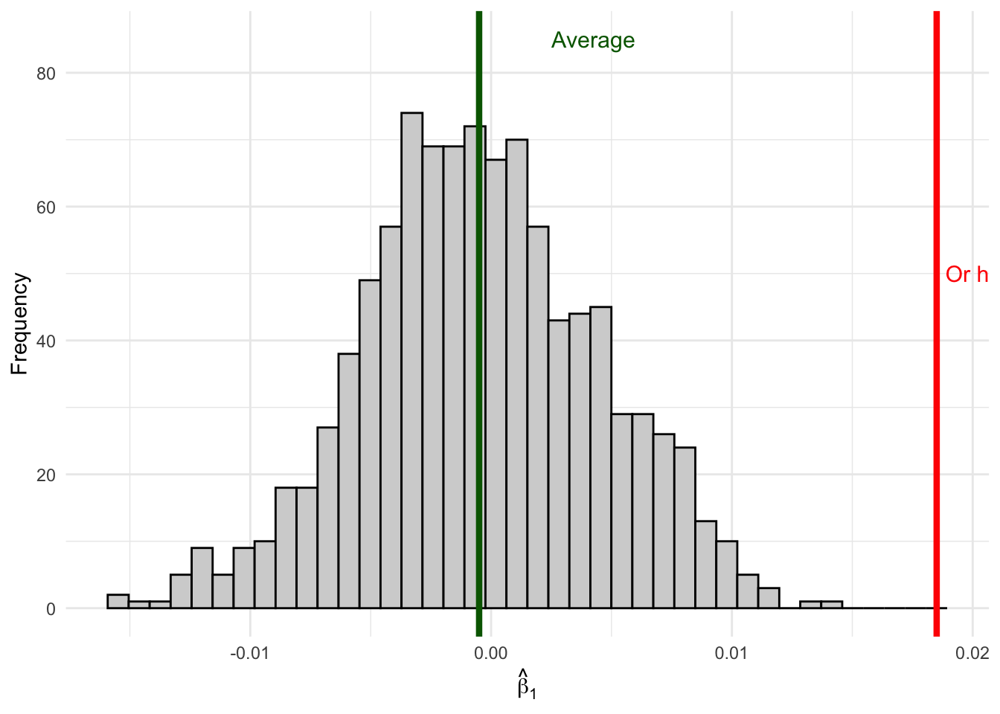
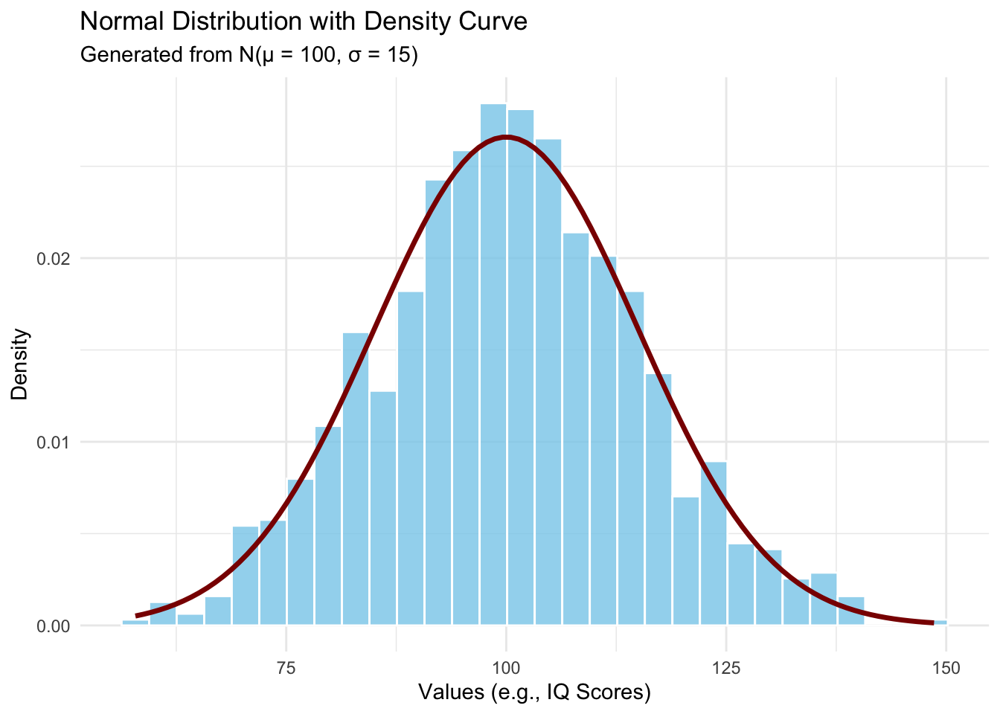
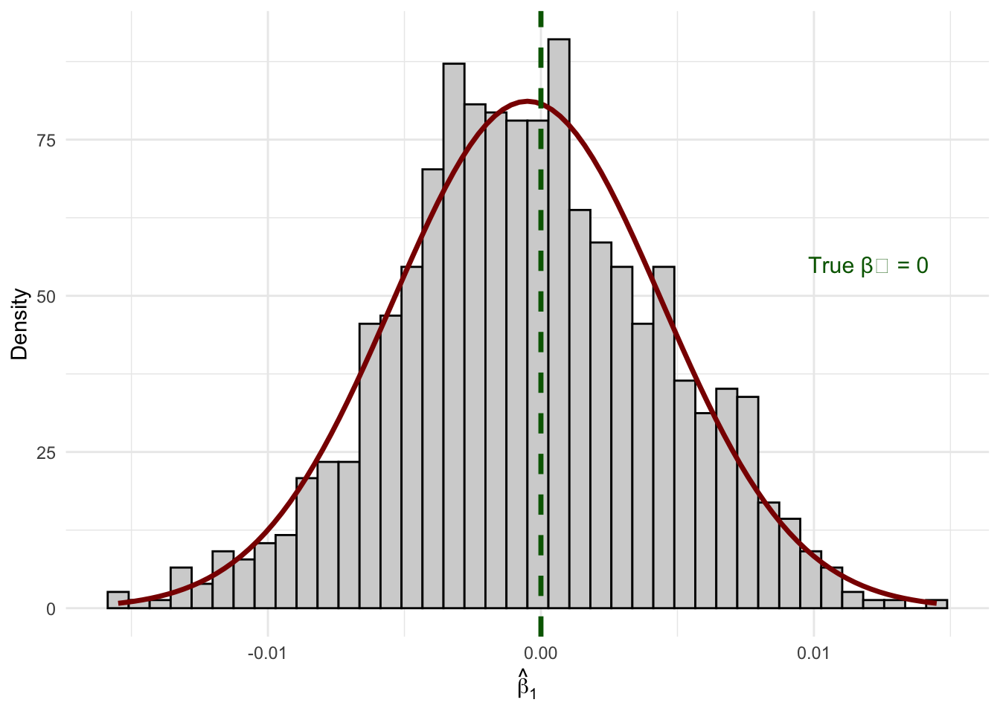
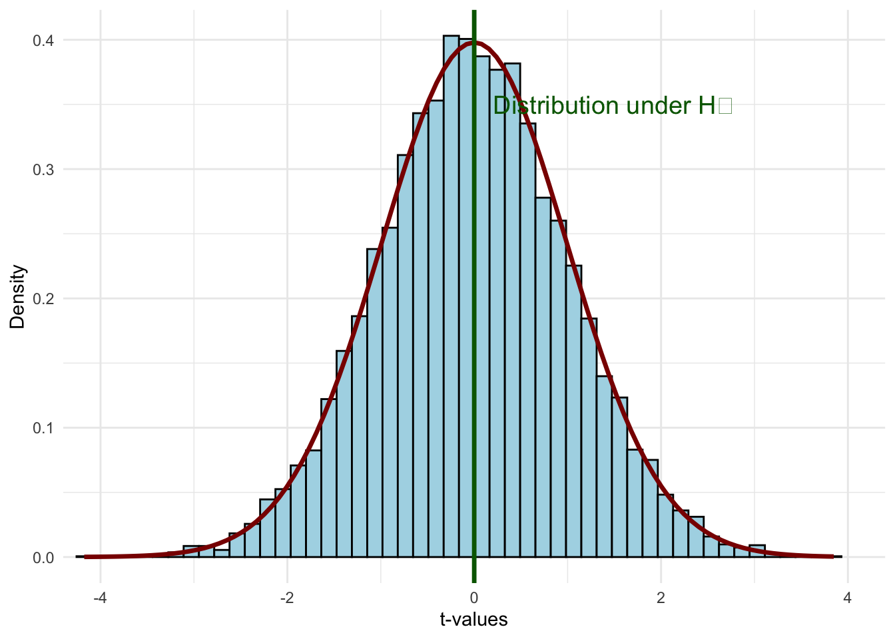
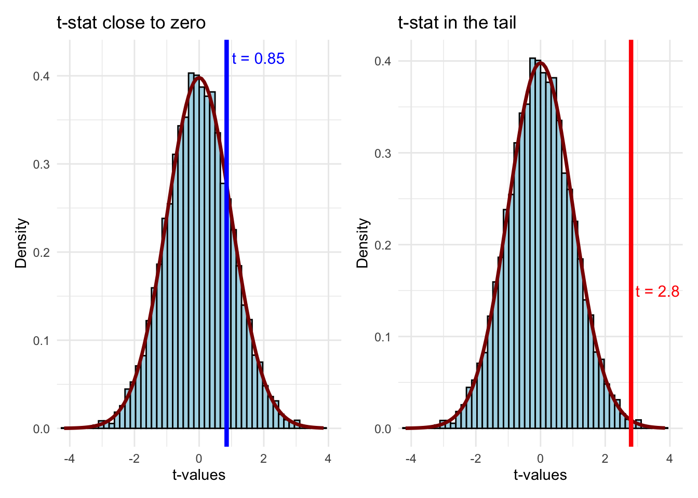
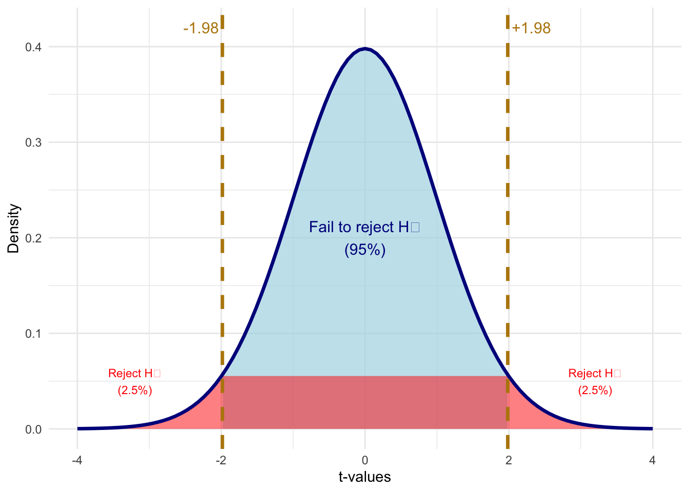
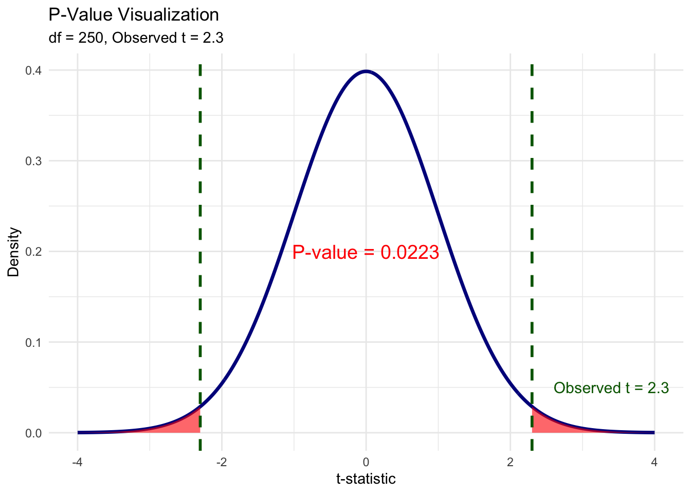
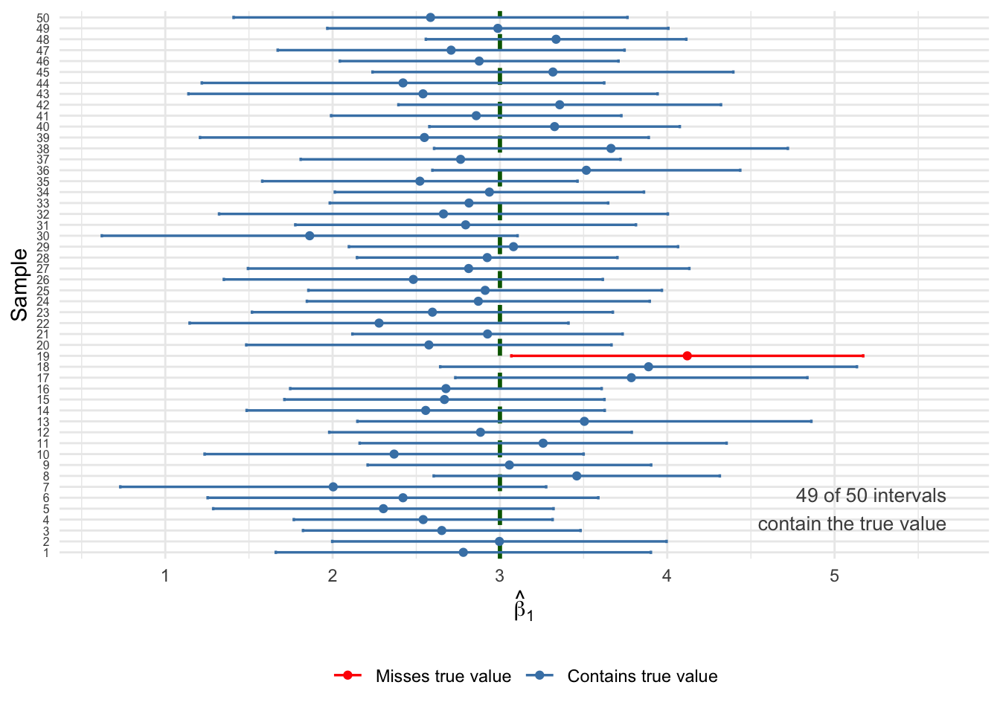

In the previous chapters, we learned how to estimate the parameters of a regression model using OLS. We discussed how, under certain assumptions, our OLS estimator \(\hat{\beta}_j\) is unbiased—meaning that on average, across many hypothetical samples, our estimate equals the true population parameter \(\beta_j\).
But here’s the catch: we only ever observe one sample. Our single estimate might be too high or too low relative to the truth, simply due to the random variation inherent in sampling. Statistical inference is the set of tools that allows us to quantify this uncertainty and make statements about population parameters based on sample data.
The central question of statistical inference is: Is our single OLS estimate “real,” or is it due to random chance?
6.2 The Sampling Distribution: A Simulation
To understand why uncertainty matters, let’s run a simulation. Imagine we have a population where the true relationship between \(x\) and \(y\) is:
\[y = 2.45 + 0 \cdot x + \mu\]
Notice that the true effect of \(x\) on \(y\) is exactly zero. In the population, \(x\) has no effect on \(y\) whatsoever.
But what happens when we draw samples from this population and estimate OLS regressions? Let’s find out.
Code
set.seed(124890)# Create our "population" datapop_data <-tibble(x =sample(1:100, size =1000, replace =TRUE),err =rnorm(1000),y =2.45+0* x + err # True beta_1 = 0)# Number of simulation repetitionsn_sims <-1000# Run the simulationsim_results <-map_dfr(1:n_sims, function(i) {# Draw a random sample of 50 observations sample_data <- pop_data |>slice_sample(n =50, replace =TRUE)# Estimate OLS regression reg <-lm(y ~ x, data = sample_data)# Store the estimatetibble(iteration = i,b1_hat =coef(reg)["x"] )})# Calculate the average estimateavg_estimate <-mean(sim_results$b1_hat)# Create the visualizationggplot(sim_results, aes(x = b1_hat)) +geom_histogram(fill ="lightgrey", color ="black", bins =40) +geom_vline(xintercept = avg_estimate, color ="darkgreen", linewidth =1.5) +annotate("text", x = avg_estimate +0.003, y =85,label =paste0("Average estimate\n= ", round(avg_estimate, 4)),color ="darkgreen", size =4, hjust =0) +labs(x =expression(hat(beta)[1]),y ="Frequency" ) +theme_minimal() +theme(axis.text =element_text(size =12),axis.title =element_text(size =14) )
Figure 6.1: Sampling distribution of β̂₁ when the true β₁ = 0. Each bar represents the frequency of estimates across 1,000 different samples.

Look at what happened! Even though the true \(\beta_1 = 0\), we got a distribution of different estimates ranging from about -0.02 to +0.02. Some samples produced positive estimates, others produced negative estimates. The average across all samples is very close to zero (as expected from unbiasedness), but any individual sample could give us an estimate that deviates from zero.
This distribution of estimates across all possible samples is called the sampling distribution of \(\hat{\beta}_j\).
6.3 Where Does Our Estimate Fall?
Now imagine you only have access to one sample—as is always the case in practice. You run your regression and get an estimate of, say, \(\hat{\beta}_1 = 0.001\).
How do you know if your estimate comes from here (close to the true value):
Figure 6.2: An estimate close to the average is likely consistent with the null hypothesis.

Or from here (far out in the tails):
Figure 6.3: An estimate in the tail is unlikely if the true effect is zero—suggesting the true effect might not be zero.

If your estimate falls in the middle of the distribution where \(\beta_1 = 0\), it’s consistent with the null hypothesis of no effect. But if your estimate falls way out in the tails, it suggests that maybe the true \(\beta_1\) isn’t zero after all—because getting such an extreme estimate would be very unlikely if \(\beta_1\) really were zero.
The tools of statistical inference formalize this intuition.
6.4 The Sampling Distribution of \(\hat{\beta}_j\)
To conduct statistical inference, we need to know the shape of the sampling distribution. We’ve already established two key properties of our OLS estimator (under the Gauss-Markov assumptions):
Expected Value (Unbiasedness):\[E[\hat{\beta}_j] = \beta_j\]
where \(SST_j\) is the total sum of squares of \(x_j\) and \(R^2_j\) is the R-squared from regressing \(x_j\) on all other independent variables.
But knowing the mean and variance isn’t enough—we need to know the shape of the distribution.
6.4.1 The Normality Assumption
To fully characterize the sampling distribution, we make an additional assumption:
Normality Assumption
The population error \(\mu\) is independent of the explanatory variables \(x_1, x_2, ..., x_k\) and is normally distributed with zero mean and variance \(\sigma^2\):
This says that conditional on the independent variables, the outcome \(y\) follows a normal distribution centered on the regression line.
Let’s visualize what a normal distribution looks like:
Code
set.seed(123)mu <-100sigma <-15normal_data <-tibble(values =rnorm(n =1000, mean = mu, sd = sigma))ggplot(normal_data, aes(x = values)) +geom_histogram(aes(y =after_stat(density)),bins =30,fill ="skyblue",color ="white",alpha =0.8) +stat_function(fun = dnorm,args =list(mean = mu, sd = sigma),color ="darkred",linewidth =1.2) +labs(title ="Normal Distribution with Density Curve",subtitle =paste0("Generated from N(μ = ", mu, ", σ = ", sigma, ")"),x ="Values (e.g., IQ Scores)",y ="Density" ) +theme_minimal()
Figure 6.4: The normal (Gaussian) distribution—the classic ‘bell curve.’ The example shows IQ scores, which are designed to follow N(100, 15).

At first glance, the normality assumption seems quite strong. For many economic variables—like wages, which are bounded below by zero and have a right skew—the distribution is clearly not normal. However, there’s good news: as long as our sample size is large enough, the sampling distribution of \(\hat{\beta}_j\) will be approximately normal even if the errors aren’t normally distributed. This result is called asymptotic normality and follows from the Central Limit Theorem.
6.4.2 The Normal Sampling Distribution
Under the normality assumption (or with large samples via asymptotic normality), our OLS estimator follows a normal distribution:
Let’s verify this with a simulation. We’ll draw many samples and show that the distribution of estimates indeed looks normal:
Code
# Overlay a normal density on our simulation resultsggplot(sim_results, aes(x = b1_hat)) +geom_histogram(aes(y =after_stat(density)),fill ="lightgrey", color ="black", bins =40) +stat_function(fun = dnorm,args =list(mean =mean(sim_results$b1_hat), sd =sd(sim_results$b1_hat)),color ="darkred",linewidth =1.2 ) +geom_vline(xintercept =0, color ="darkgreen", linewidth =1.2, linetype ="dashed") +annotate("text", x =0.012, y =55,label ="True β₁ = 0", color ="darkgreen", size =4) +labs(x =expression(hat(beta)[1]),y ="Density" ) +theme_minimal()
Figure 6.5: The sampling distribution of β̂₁ follows a normal distribution (red curve) centered on the true value.

The histogram of our 1,000 simulated estimates matches the theoretical normal curve almost perfectly!
Quick Check: Understanding the Sampling Distribution
6.5 Hypothesis Testing
Now that we understand the sampling distribution, we can use it to make inferences about population parameters. The key idea is hypothesis testing: we hypothesize about the value of \(\beta_j\) in the population, then use our sample estimate to evaluate whether the hypothesis is plausible.
6.5.1 The Null and Alternative Hypotheses
In econometrics, we’re usually interested in whether a variable has any effect on the outcome. We formalize this as:
Null Hypothesis:\(H_0: \beta_j = 0\)
The null hypothesis states that the variable \(x_j\) has no effect on \(y\) in the population (after controlling for other variables).
Alternative Hypothesis: We test the null against one of:
\(H_1: \beta_j \neq 0\) (two-sided test, most common)
\(H_1: \beta_j > 0\) (one-sided, if we expect a positive effect)
\(H_1: \beta_j < 0\) (one-sided, if we expect a negative effect)
This is simply the ratio of our estimate to its standard error. The t-stat tells us: how many standard errors away from zero is our estimate?
6.5.3 Properties of the t-Statistic
The t-statistic has several useful properties:
Same sign as the estimate: Since \(se(\hat{\beta}_j) > 0\), the t-stat has the same sign as \(\hat{\beta}_j\)
Magnitude matters: As \(\hat{\beta}_j\) grows in magnitude, so does \(t_{\hat{\beta}_j}\)
Signal-to-noise ratio: The t-stat measures how large our estimate is relative to the noise (uncertainty) in our data
6.5.4 Visualizing the Hypothesis Test
Let’s visualize what the t-test is doing. Under the null hypothesis \(H_0: \beta_j = 0\), we assume that the distribution of possible estimates is centered on zero:
Code
set.seed(42)df_value <-100# degrees of freedomt_sample <-tibble(t_value =rt(10000, df = df_value))ggplot(t_sample, aes(x = t_value)) +geom_histogram(aes(y =after_stat(density)),bins =50,fill ="lightblue",color ="black") +stat_function(fun = dt,args =list(df = df_value),color ="darkred",linewidth =1.2) +geom_vline(xintercept =0, color ="darkgreen", linewidth =1.2) +annotate("text", x =1.5, y =0.35,label ="Distribution under H₀",color ="darkgreen", size =5) +labs(x ="t-values", y ="Density") +coord_cartesian(xlim =c(-4, 4)) +theme_minimal()
Figure 6.6: The t-distribution under the null hypothesis H₀: βⱼ = 0. Most estimates will fall near zero.

Now suppose we get a t-statistic from our sample. Is it close to zero (consistent with \(H_0\)) or far from zero (evidence against \(H_0\))?
Code
p_close <-ggplot(t_sample, aes(x = t_value)) +geom_histogram(aes(y =after_stat(density)),bins =50, fill ="lightblue", color ="black") +stat_function(fun = dt, args =list(df = df_value),color ="darkred", linewidth =1.2) +geom_vline(xintercept =0.85, color ="blue", linewidth =1.5) +annotate("text", x =0.85, y =0.42, label ="t = 0.85",color ="blue", size =4, hjust =-0.1) +labs(x ="t-values", y ="Density", title ="t-stat close to zero") +coord_cartesian(xlim =c(-4, 4)) +theme_minimal()p_far <-ggplot(t_sample, aes(x = t_value)) +geom_histogram(aes(y =after_stat(density)),bins =50, fill ="lightblue", color ="black") +stat_function(fun = dt, args =list(df = df_value),color ="darkred", linewidth =1.2) +geom_vline(xintercept =2.8, color ="red", linewidth =1.5) +annotate("text", x =2.8, y =0.15, label ="t = 2.8",color ="red", size =4, hjust =-0.1) +labs(x ="t-values", y ="Density",title ="t-stat in the tail") +coord_cartesian(xlim =c(-4, 4)) +theme_minimal()p_close + p_far
Figure 6.7: Two possible t-statistics: one at 0.85 (consistent with H₀) and one at 2.8 (in the tail, suggesting we reject H₀).

A t-statistic of 0.85 falls well within the “body” of the distribution—values like this occur frequently when \(H_0\) is true. But a t-statistic of 2.8 is out in the tail—such extreme values are rare when \(H_0\) is true.
6.5.5 Critical Values and Rejection Regions
To formalize our decision rule, we need to define:
Significance level (\(\alpha\)): The probability of rejecting \(H_0\) when it’s actually true (Type I error). Common choices: 10%, 5%, or 1%.
Critical value (\(c\)): The threshold value of the t-statistic beyond which we reject \(H_0\).
For a two-sided test at the 5% level, we reject \(H_0\) if \(|t_{\hat{\beta}_j}| > c\), where \(c\) is the critical value that leaves 2.5% of the distribution in each tail.
Code
# Calculate critical value for 5% significance, two-sidedalpha <-0.05c_val <-qt(alpha/2, df = df_value, lower.tail =FALSE)# Create shading data for rejection regionst_grid <-seq(-4, 4, length.out =500)t_dens <-dt(t_grid, df = df_value)shade_data <-tibble(t_value = t_grid, density = t_dens) |>mutate(rejection = t_value <-c_val | t_value > c_val )ggplot() +# Full distributiongeom_area(data = shade_data |>filter(!rejection),aes(x = t_value, y = density),fill ="lightblue", alpha =0.7) +# Rejection regionsgeom_area(data = shade_data |>filter(rejection),aes(x = t_value, y = density),fill ="red", alpha =0.5) +# Distribution curvestat_function(fun = dt, args =list(df = df_value),color ="darkblue", linewidth =1.2) +# Critical value linesgeom_vline(xintercept =c(-c_val, c_val), color ="darkgoldenrod", linewidth =1.2, linetype ="dashed") +# Annotationsannotate("text", x =-c_val, y =0.42, label =paste0("-", round(c_val, 2)),color ="darkgoldenrod", size =4, hjust =1.1) +annotate("text", x = c_val, y =0.42, label =paste0("+", round(c_val, 2)),color ="darkgoldenrod", size =4, hjust =-0.1) +annotate("text", x =0, y =0.2,label ="Fail to reject H₀\n(95%)",color ="darkblue", size =4) +annotate("text", x =3.2, y =0.05,label ="Reject H₀\n(2.5%)",color ="red", size =3) +annotate("text", x =-3.2, y =0.05,label ="Reject H₀\n(2.5%)",color ="red", size =3) +labs(x ="t-values", y ="Density") +coord_cartesian(xlim =c(-4, 4)) +theme_minimal()
Figure 6.8: Critical values for a two-sided test at the 5% significance level. We reject H₀ if |t| > 1.96.

6.5.6 Hypothesis Testing Example
Let’s work through a complete example. We’ll create some simulated housing data and test whether lot area affects sale price:
# Create simulated housing dataset.seed(2025)n <-500housing_data <-tibble(lot_area =runif(n, 5000, 20000),pool_area =rbinom(n, 1, 0.15) *runif(n, 200, 600),garage_area =runif(n, 200, 800),year_built =sample(1960:2020, n, replace =TRUE),year_remod =pmax(year_built, sample(1980:2023, n, replace =TRUE)),# True relationship: lot_area has effect of $1.50 per sq ftsale_price =-2500000+1.50* lot_area +80* pool_area +150* garage_area +500* year_built +900* year_remod +rnorm(n, 0, 50000))# Estimate the regressionreg_housing <-lm(sale_price ~ lot_area + pool_area + garage_area + year_built + year_remod, data = housing_data)summary(reg_housing)
To test \(H_0: \beta_1 = 0\) (lot area has no effect):
# Extract the coefficient and standard error for lot_areab1_hat <-coef(reg_housing)["lot_area"]se_b1 <-summary(reg_housing)$coefficients["lot_area", "Std. Error"]# Calculate the t-statistict_stat <- b1_hat / se_b1# Find the critical value at 5% significancesig_level <-0.05n_obs <-nobs(reg_housing)k <-5# number of independent variablesdf <- n_obs - k -1t_crit <-qt(sig_level /2, df = df, lower.tail =FALSE)# Display resultscat("Estimate:", round(b1_hat, 4), "\n")
Estimate: 1.5528
cat("Standard Error:", round(se_b1, 4), "\n")
Standard Error: 0.5207
cat("t-statistic:", round(t_stat, 2), "\n")
t-statistic: 2.98
cat("Critical value (5%):", round(t_crit, 2), "\n")
Critical value (5%): 1.96
cat("Reject H₀?", abs(t_stat) > t_crit, "\n")
Reject H₀? TRUE
Since \(|t_{\hat{\beta}_1}|\) exceeds the critical value of approximately 1.96, we reject the null hypothesis that lot area has no effect on sale price. The estimate is statistically significant at the 5% level.
6.5.7 Rule of Thumb
With modern datasets that have hundreds or thousands of observations, the critical value for a two-sided 5% test is essentially always 1.96 ≈ 2.
This gives us a handy rule of thumb:
The “Rule of 2”
An estimate is statistically significant at the 5% level if:
\[|\hat{\beta}_j| > 2 \times se(\hat{\beta}_j)\]
In other words, if your estimate is more than twice as large as its standard error, you can reject the null hypothesis of no effect at the 5% level.
6.6 P-Values
While the t-test with a fixed significance level is useful, it has limitations. Saying an estimate is “significant at 5%” doesn’t tell us how strongly we reject the null. Was it a narrow rejection or a “knock out”?
The p-value answers this question:
Definition: P-Value
The p-value is the smallest significance level at which we would reject the null hypothesis.
Equivalently: the p-value is the probability of observing a t-statistic as extreme (or more extreme) as the one we calculated, if the null hypothesis were true.
Figure 6.9: The p-value is the total shaded area in both tails beyond the observed t-statistic.

6.6.2 Interpreting P-Values
The p-value tells us the probability of getting our estimate (or something more extreme) if the null were true:
p = 0.035: There’s a 3.5% chance of getting our estimate if \(\beta_j = 0\). That’s quite unlikely—evidence against \(H_0\).
p = 0.35: There’s a 35% chance of getting our estimate if \(\beta_j = 0\). That’s not unusual at all—no evidence against \(H_0\).
Common decision rules:
p < 0.10: Reject \(H_0\) at 10% level (weak evidence against \(H_0\))
p < 0.05: Reject \(H_0\) at 5% level (moderate evidence against \(H_0\))
p < 0.01: Reject \(H_0\) at 1% level (strong evidence against \(H_0\))
6.6.3 A Note on Language
When we cannot reject the null hypothesis, we say:
“We fail to reject the null at the x% level.”
We do not say we “accept” the null. Why? Because there are many possible values of \(\beta_j\) that we would also fail to reject. Failing to reject \(\beta_j = 0\) doesn’t mean \(\beta_j\) actually equals zero—it just means our data aren’t precise enough to distinguish \(\beta_j\) from zero.
6.6.4 Statistical vs. Practical Significance
Important Distinction
Statistical significance and practical (economic) significance are not the same thing!
A coefficient can be statistically significant but practically unimportant. This is especially common in very large samples, where even tiny effects can be detected.
For example, suppose we find that an additional year of education increases wages by $0.50 per year, and this is statistically significant with p < 0.001. Statistically, we’re very confident the effect isn’t zero. But practically, a 50-cent annual raise is economically trivial.
Always interpret the magnitude of coefficients, not just their statistical significance.
Quick Check: Hypothesis Testing
6.7 Confidence Intervals
Another way to quantify uncertainty is through confidence intervals. While hypothesis tests ask “is \(\beta_j\) different from zero?”, confidence intervals ask “what range of values is \(\beta_j\) likely to fall within?”
6.7.1 Computing a Confidence Interval
A confidence interval at the \((1 - \alpha)\) level is:
Warning: `geom_errorbarh()` was deprecated in ggplot2 4.0.0.
ℹ Please use the `orientation` argument of `geom_errorbar()` instead.
`height` was translated to `width`.
Figure 6.10: Twenty 95% confidence intervals from different samples. The true β₁ = 1.50 (dashed line). About 95% of intervals capture the true value.

6.8 T-Tests, P-Values, and CIs: A Comparison
These three approaches are closely related but answer slightly different questions:
Method
Question Answered
T-statistic
Is my estimate large relative to the noise in the data?
P-value
What’s the probability of seeing my estimate if \(H_0\) were true?
Confidence Interval
What range of values is plausible for \(\beta_j\)?
All three are mathematically connected:
If \(|t| > 1.96\), then p < 0.05, and the 95% CI excludes zero
If p < 0.05, then \(|t| > 1.96\), and the 95% CI excludes zero
If the 95% CI excludes zero, then p < 0.05 and \(|t| > 1.96\)
6.9 Reading Regression Tables
Now that we understand statistical inference, we can properly interpret the regression tables you’ll encounter in academic papers.
6.9.1 From R Output to Publication Format
When you run summary() on a regression in R, you get detailed but messy output. Academic papers present this information in a standardized, clean format using tables.
In a publication, this same information would appear as:
Table 6.1: The Effect of Lot Area on Home Sale Price
Sale Price
* p < 0.1, ** p < 0.05, *** p < 0.01
Standard errors in parentheses. * p < 0.1, ** p < 0.05, *** p < 0.01
(Intercept)
-2369345.453***
(407348.898)
Lot Area (sq ft)
1.553***
(0.521)
Pool Area
81.552***
(14.698)
Garage Area
167.084***
(13.493)
Year Built
554.285***
(143.828)
Year Remodeled
775.747***
(223.586)
Num.Obs.
500
R2
0.340
R2 Adj.
0.333
6.9.2 Decoding the Table Structure
Rows are variables: The top indicates the dependent variable. Rows below show independent variables and the constant (intercept).
The main numbers are coefficients: Each cell contains \(\hat{\beta}_j\).
Numbers in parentheses are standard errors: These are \(se(\hat{\beta}_j)\).
Stars indicate significance levels:
* = significant at 10% level (p < 0.10)
** = significant at 5% level (p < 0.05)
*** = significant at 1% level (p < 0.01)
Bottom statistics: Sample size (N), R-squared, and sometimes other diagnostics.
6.9.3 Multiple Columns Show Robustness
Most regression tables have multiple columns, each representing a different specification. This lets readers see how estimates change as controls are added:
# Three specifications with increasing controlsreg1 <-lm(sale_price ~ lot_area, data = housing_data)reg2 <-lm(sale_price ~ lot_area + pool_area + garage_area, data = housing_data)reg3 <-lm(sale_price ~ lot_area + pool_area + garage_area + year_built + year_remod, data = housing_data)
Table 6.2: The Effect of Lot Area on Home Sale Price: Multiple Specifications
(1)
(2)
(3)
* p < 0.1, ** p < 0.05, *** p < 0.01
Standard errors in parentheses. * p < 0.1, ** p < 0.05, *** p < 0.01
(Intercept)
385464.906***
288761.744***
-2369345.453***
(8462.611)
(10454.349)
(407348.898)
Lot Area (sq ft)
1.038
1.472***
1.553***
(0.635)
(0.545)
(0.521)
Pool Area
86.081***
81.552***
(15.352)
(14.698)
Garage Area
170.687***
167.084***
(14.112)
(13.493)
Year Built
554.285***
(143.828)
Year Remodeled
775.747***
(223.586)
Num.Obs.
500
500
500
R2
0.005
0.274
0.340
R2 Adj.
0.003
0.269
0.333
Notice how the coefficient on Lot Area changes across specifications. In column (1), without controls, the estimate is different from column (3). This pattern often reveals omitted variable bias in simpler specifications.
6.9.4 What to Look for in Regression Tables
What is the coefficient on the variable of interest? How do we interpret it?
Is it statistically significant? At what level?
How does the coefficient change across specifications? Does it remain stable or shift dramatically?
Are the sample size and R-squared reasonable? Very small N or very low R² might raise concerns.
Practice: Reading a Regression Table
Consider this table examining the effect of stock performance on CEO salary:
Effect of Stock Performance on CEO Salary
(1)
(2)
* p < 0.1, ** p < 0.05, *** p < 0.01
(Intercept)
6.806***
4.788***
(0.041)
(0.234)
Return on Stock (%)
0.001
0.001
(0.001)
(0.001)
Log(Sales)
0.287***
(0.033)
Num.Obs.
209
209
R2 Adj.
-0.004
0.264
6.10 F-Tests: Testing Multiple Hypotheses
Sometimes we want to test hypotheses about multiple coefficients simultaneously. For example: “Do experience AND tenure jointly affect wages?”
The F-test allows us to test such joint hypotheses.
6.10.1 Why Not Just Use Multiple t-Tests?
You might think: “Why not just run separate t-tests on each coefficient?”
There are two problems:
No restrictions on other parameters: A t-test on \(\beta_2\) puts no restrictions on \(\beta_3\). If the variables are correlated, this can be misleading.
Multiple comparisons problem: If you run many tests at the 5% level, you’ll reject some true null hypotheses just by chance. With 20 tests, you’d expect about 1 false rejection even if all nulls are true!
Suppose we want to test whether on-the-job training variables (experience and tenure) matter at all:
\[H_0: \beta_2 = \beta_3 = 0\]\[H_1: H_0 \text{ is not true}\]
The alternative is satisfied if either\(\beta_2 \neq 0\) or \(\beta_3 \neq 0\) (or both).
6.10.3 Computing the F-Statistic
The F-test compares two models:
Unrestricted Model: The full model with all variables \[UR: \widehat{\log(wage)} = \hat{\beta}_0 + \hat{\beta}_1(educ) + \hat{\beta}_2(exper) + \hat{\beta}_3(tenure) + \hat{\beta}_4(age)\]
Restricted Model: The model assuming the null is true (dropping the restricted variables) \[R: \widehat{\log(wage)} = \hat{\beta}_0 + \hat{\beta}_1(educ) + \hat{\beta}_4(age)\]
\(SSR_R\) = Sum of squared residuals from restricted model
\(SSR_{UR}\) = Sum of squared residuals from unrestricted model
\(q\) = Number of restrictions (variables dropped)
\(df_{UR}\) = Degrees of freedom in unrestricted model (\(n - k - 1\))
6.10.4 F-Test Example
Let’s test whether year built and year remodeled jointly affect home prices:
# Unrestricted model (full model)reg_unrestricted <-lm(sale_price ~ lot_area + pool_area + garage_area + year_built + year_remod, data = housing_data)# Restricted model (dropping year variables)reg_restricted <-lm(sale_price ~ lot_area + pool_area + garage_area,data = housing_data)# Compute F-statistic manuallyssr_r <-sum(resid(reg_restricted)^2)ssr_ur <-sum(resid(reg_unrestricted)^2)df_ur <-df.residual(reg_unrestricted)q <-2# number of restrictionsf_numerator <- (ssr_r - ssr_ur) / qf_denominator <- ssr_ur / df_urf_stat <- f_numerator / f_denominator# Critical value at 5% significancef_crit <-qf(0.05, df1 = q, df2 = df_ur, lower.tail =FALSE)cat("F-statistic:", round(f_stat, 2), "\n")
F-statistic: 24.69
cat("Critical value (5%):", round(f_crit, 2), "\n")
Critical value (5%): 3.01
cat("Reject H₀?", f_stat > f_crit, "\n")
Reject H₀? TRUE
Since the F-statistic exceeds the critical value, we reject the null hypothesis. Year built and year remodeled are jointly statistically significant—they collectively improve the model’s fit.
6.10.5 Using R’s anova() Function
In practice, you’ll use R’s anova() function to perform F-tests:
anova(reg_restricted, reg_unrestricted)
Analysis of Variance Table
Model 1: sale_price ~ lot_area + pool_area + garage_area
Model 2: sale_price ~ lot_area + pool_area + garage_area + year_built +
year_remod
Res.Df RSS Df Sum of Sq F Pr(>F)
1 496 1420348267818
2 494 1291292854097 2 129055413721 24.686 0.00000000006048 ***
---
Signif. codes: 0 '***' 0.001 '**' 0.01 '*' 0.05 '.' 0.1 ' ' 1
The output shows the F-statistic, degrees of freedom, and p-value directly.
6.10.6 The F-Statistic in Terms of R²
The F-statistic can also be written in terms of R-squared values:
This shows that the F-test is essentially asking: Does the unrestricted model fit the data significantly better than the restricted model?
If \(R^2_{UR}\) is much larger than \(R^2_R\), the F-statistic will be large, and we’ll reject the null.
Properties of the F-Test
The F-statistic is always non-negative, so F-tests are always one-sided
If the null is rejected, we say the variables are jointly statistically significant
We cannot determine which individual variable is significant—only that at least one is
If variables are jointly insignificant, it provides justification for dropping them from the model
6.11 Chapter Summary
Key Takeaways
Statistical inference allows us to move from sample estimates to statements about population parameters, accounting for sampling variability.
The sampling distribution of \(\hat{\beta}_j\) describes how our estimates would vary across repeated samples. Under the normality assumption (or with large samples), it follows a normal distribution.
Hypothesis testing uses the t-statistic to determine whether our estimate is “far enough” from zero to reject the null hypothesis: \(t = \hat{\beta}_j / se(\hat{\beta}_j)\)
P-values tell us the probability of seeing our data if the null were true. Smaller p-values provide stronger evidence against \(H_0\).
Confidence intervals provide a range of plausible values for the population parameter. A 95% CI excludes zero if and only if the estimate is significant at the 5% level.
Statistical significance ≠ practical significance. Always consider the magnitude of effects, not just their p-values.
F-tests allow us to test multiple hypotheses simultaneously, avoiding the multiple comparisons problem.
Regression tables in academic papers present coefficients, standard errors (in parentheses), and significance stars. Multiple columns show robustness across specifications.
6.12 Practice Exercises
Practice: Interpreting t-Statistics and Hypothesis Testing
Scenario: Consider a regression where \(\hat{\beta}_1 = 2.5\) and \(se(\hat{\beta}_1) = 0.8\). Assume a large sample size (df > 100).
Practice: Understanding P-Values
Practice: Statistical vs. Practical Significance
Practice: F-Tests for Joint Hypotheses
Scenario: You estimate a model of house prices with: lot area, garage size, bedrooms, bathrooms, year built, and 20 neighborhood dummy variables. You want to test whether neighborhood matters for house prices.
Practice: Reading Regression Tables
Regression Output: A researcher studies the determinants of college GPA:
Note: athlete = 1 if varsity athlete; legacy = 1 if parent attended the college
Show Explanation
t-Statistics and Hypothesis Testing (i-v):
The t-statistic is calculated as \(t = \hat{\beta}_1 / se(\hat{\beta}_1) = 2.5 / 0.8 = 3.125\).
Since \(|t| = 3.125 > 1.96\), we reject \(H_0\) at the 5% level. The estimate is statistically significant.
Since \(|t| = 3.125 > 2.58\), we also reject \(H_0\) at the 1% level. The estimate is highly significant.
The 95% CI is \(\hat{\beta}_1 \pm 1.96 \times se(\hat{\beta}_1) = 2.5 \pm 1.96 \times 0.8 = 2.5 \pm 1.568 = [0.93, 4.07]\).
Since 4 falls within the confidence interval [0.93, 4.07], we cannot reject the hypothesis that \(\beta_1 = 4\) at the 5% level. The CI supports (or at least doesn’t contradict) this claim.
Understanding P-Values (vi-x):
The p-value is the probability of observing data as extreme as ours if the null hypothesis were true. It is NOT the probability that the null is true.
With p = 0.001, we can reject at all three levels (10%, 5%, and 1%) because 0.001 < 0.01 < 0.05 < 0.10.
With p = 0.047, we can reject at 10% (0.047 < 0.10) and 5% (0.047 < 0.05), but not at 1% (0.047 > 0.01).
With p = 0.082, we can only reject at 10% (0.082 < 0.10), but not at 5% (0.082 > 0.05) or 1%.
With p = 0.523, we cannot reject at any conventional level. There is a 52.3% chance of seeing data this extreme if \(H_0\) were true—not unusual at all.
Statistical vs. Practical Significance (xi-xii):
A $50/year effect is statistically significant (p < 0.001) but practically trivial. This is less than 25 cents per hour—hardly worth an extra year of schooling! Large samples can detect tiny effects.
The standard error shrinks as \(n\) increases (specifically, \(se \propto 1/\sqrt{n}\)). With huge samples, even tiny deviations from zero become “detectable” statistically, even if they’re meaningless practically.
F-Tests (xiii-xvi):
The null hypothesis is that ALL 20 neighborhood coefficients equal zero jointly: \(H_0: \beta_{n1} = \beta_{n2} = ... = \beta_{n20} = 0\). If any neighborhood differs from the baseline, \(H_0\) is false.
You are testing 20 restrictions—one for each neighborhood dummy variable set to zero.
Since F = 3.45 > 1.57 = critical value, we reject \(H_0\). Neighborhoods are jointly statistically significant—they collectively help explain house prices.
Rejecting the joint null only tells us that at least one neighborhood coefficient differs from zero. Some individual neighborhoods might not be significantly different from the baseline—we’d need individual t-tests to determine which ones.
Reading Regression Tables (xvii-xxi):
The coefficient on SAT is 0.001, meaning each 1-point increase in SAT is associated with a 0.001 increase in GPA. For 100 points: \(100 \times 0.001 = 0.1\) GPA points.
The p-value for athlete is 0.171, which is greater than 0.05. Therefore, the coefficient is NOT statistically significant at the 5% level.
The coefficient on legacy (0.142) is the difference in predicted GPA between legacy and non-legacy students, holding other variables constant. Legacy students are predicted to have GPAs 0.142 points higher.
The 95% CI is \(-0.085 \pm 1.96 \times 0.062 = -0.085 \pm 0.122 = [-0.207, 0.037]\). This interval includes zero.
When a 95% CI includes zero, it means we cannot reject \(H_0: \beta = 0\) at the 5% level—which is consistent with the p-value being 0.171 > 0.05. The CI and hypothesis test always agree.
Wooldridge, Jeffrey M. 2019. Introductory Econometrics: A Modern Approach. 7th ed. Cengage Learning.